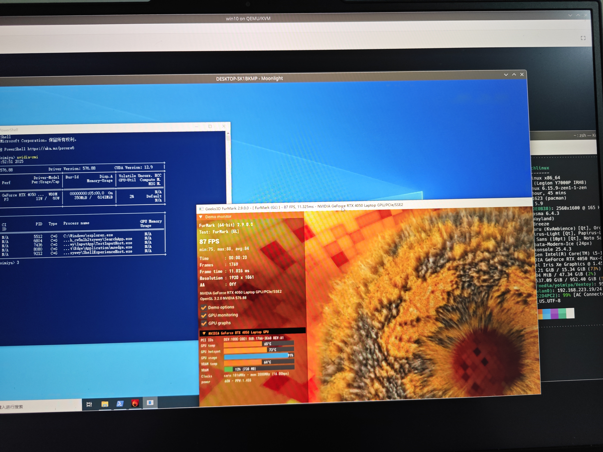
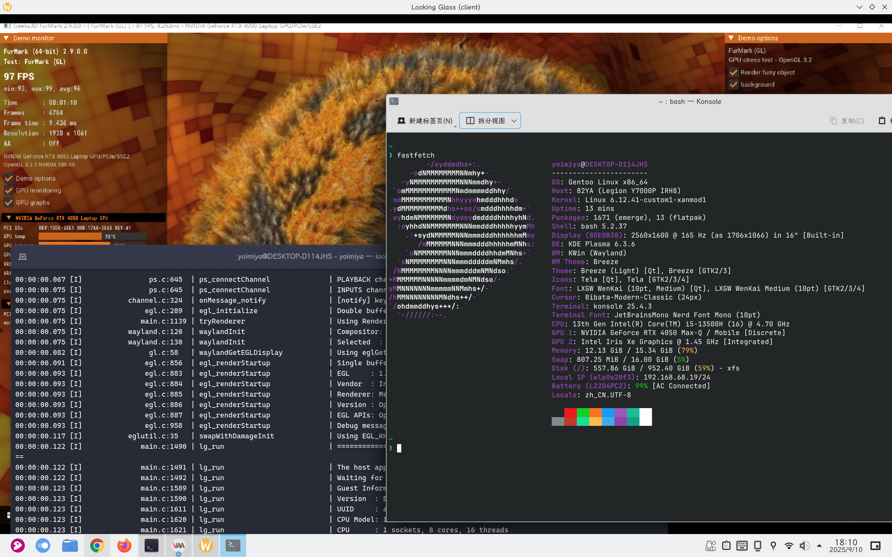

效果 #


准备工作 #
- 通读wiki
- Arch Linux
- Windows Guest
- QEMU/KVM
- HDMI欺骗器 或 外接显示器
(可选)导出离线驱动 #
在物理机 Windows 系统中用 Dism++ 导出离线驱动，重点保留显卡和音频设备驱动。
确保直通设备在同一组 #
运行以下脚本
#!/bin/bash
shopt -s nullglob
for g in $(find /sys/kernel/iommu_groups/* -maxdepth 0 -type d | sort -V); do
echo "IOMMU Group ${g##*/}:"
for d in $g/devices/*; do
echo -e "\t$(lspci -nns ${d##*/})"
done;
done;
输出示例
IOMMU Group 15:
01:00.0 VGA compatible controller [0300]: NVIDIA Corporation AD107M [GeForce RTX 4050 Max-Q / Mobile] [10de:28e1] (rev a1)
01:00.1 Audio device [0403]: NVIDIA Corporation AD107 High Definition Audio Controller [10de:22be] (rev a1)
记一下[10de:28e1]等ID
启用IOMMU #
增加 intel_iommu=on 内核参数，对于 grub 而言，可以编辑 /etc/default/grub，对于 systemd-boot ，编辑 /boot/loader/entries/arch.conf 之类的文件，在末尾增加。
隔离GPU和SSD #
新增 /etc/modprobe.d/ovmf.conf，写入如下内容
options vfio-pci ids=10de:28e1,10de:22be,1cc4:6a14
分别是GPU、音频设备和SSD的ID，替换成自己的
继续编辑 /etc/mkinitcpio.conf，增加 vfio_pci vfio vfio_iommu_type1 到 MODULES 列表中，然后运行 sudo mkinitcpio -P 生成新的内核镜像。
或者增加 /etc/dracut.conf.d/10-vfio.conf，填入 force_drivers+=" vfio_pci vfio vfio_iommu_type1 "，并重新生成内核镜像 sudo dracut -f。
重启 #
测试
lspci -nnk -d 10de:28e1
输出
01:00.0 VGA compatible controller [0300]: NVIDIA Corporation AD107M [GeForce RTX 4050 Max-Q / Mobile] [10de:28e1] (rev a1)
Subsystem: Lenovo Device [17aa:3e68]
Kernel driver in use: vfio-pci
Kernel modules: nouveau, nvidia_drm, nvidia
安装配置 virt-manager #
参见 Libvirt
大部分配置应该开箱即用
安装Windows虚拟机 #
注意CPU配置选择 host-passthrough
并且手动设置拓扑，比如一个插槽，8个核心，2个线程
添加PCI硬件 #
virt-manager设置左下角添加硬件
添加显卡（包括和它同一组的音频设备）
添加NVME磁盘
添加USB设备，如鼠标和键盘
启动虚拟机 #
现在显示用的是 spice服务器，驱动可能是 qxl 或者 virtio，不用管因为以后会删除，直接启动虚拟机
安装显卡驱动，可以用离线驱动，或者去官网下载
插入HDMI欺骗器 #
在设置确认有另一个显示器输出
串流 #
安装sunshine #
设置好账号密码
物理机安装moonlight #
sudo pacman -S moonlight-qt
启动 moonlight-qt，分辨率最高，刷新率选最高
连接windows，配置pin码
进入moonlight桌面后，在设备管理器禁用 qxl 等虚拟机显卡
Looking-Glass #
Windows #
从此处下载服务端 https://looking-glass.io/downloads
Linux #
先安装 looking-glass-client
git clone --recursive https://github.com/gnif/LookingGlass.git
cd module
sudo dkms install "."
sudo modprobe kvmfr static_size_mb=32 # See https://looking-glass.io/docs/B7/ivshmem_kvmfr/
sudo chmod 777 /dev/kvmfr0
编辑 /etc/libvirt/qemu.conf，取消注释 cgroup_device_acl，并添加 /dev/kvmfr0，然后重启 libvirtd 服务
cgroup_device_acl = [
"/dev/null", "/dev/full", "/dev/zero",
"/dev/random", "/dev/urandom",
"/dev/ptmx", "/dev/kvm",
"/dev/userfaultfd", "/dev/kvmfr0"
]
编辑 Virt-Manager 的 XML 文件，添加
<domain type='kvm' xmlns:qemu='http://libvirt.org/schemas/domain/qemu/1.0'>
<qemu:commandline>
<qemu:arg value="-device"/>
<qemu:arg value="{'driver':'ivshmem-plain','id':'shmem0','memdev':'looking-glass'}"/>
<qemu:arg value="-object"/>
<qemu:arg value="{'qom-type':'memory-backend-file','id':'looking-glass','mem-path':'/dev/kvmfr0','size':33554432,'share':true}"/>
</qemu:commandline>
spice 服务器选择监听地址
在 Windows 端打开Looking Glass服务端，在 Linux 端运行Looking Glass客户端即可连接